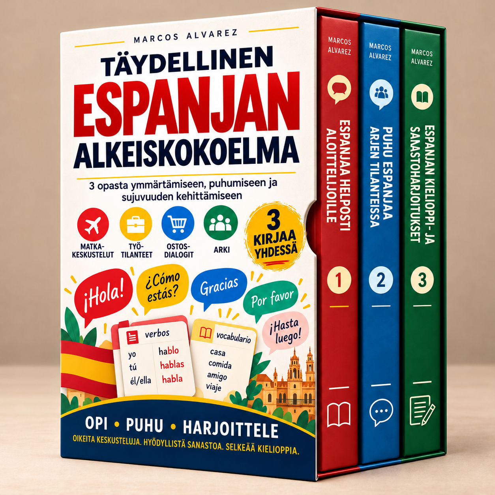

Aloita perusteista, harjoittele arjen keskusteluja ja vahvista kielioppia sekä sanavarastoa.
Oppimateriaaleja ladataan…
Ota JavaScript käyttöön jäsensivua varten tai avaa kirjat suoraan alla olevista linkeistä.
Lähetä sähköpostia